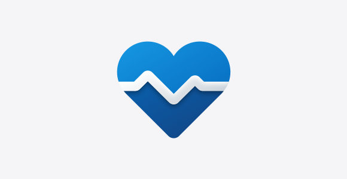
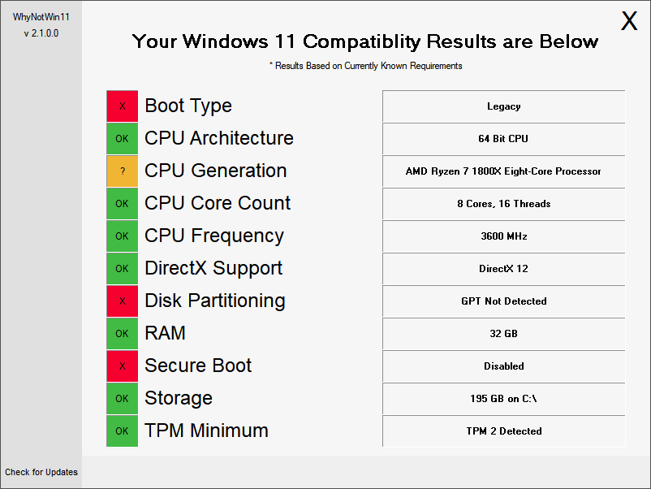
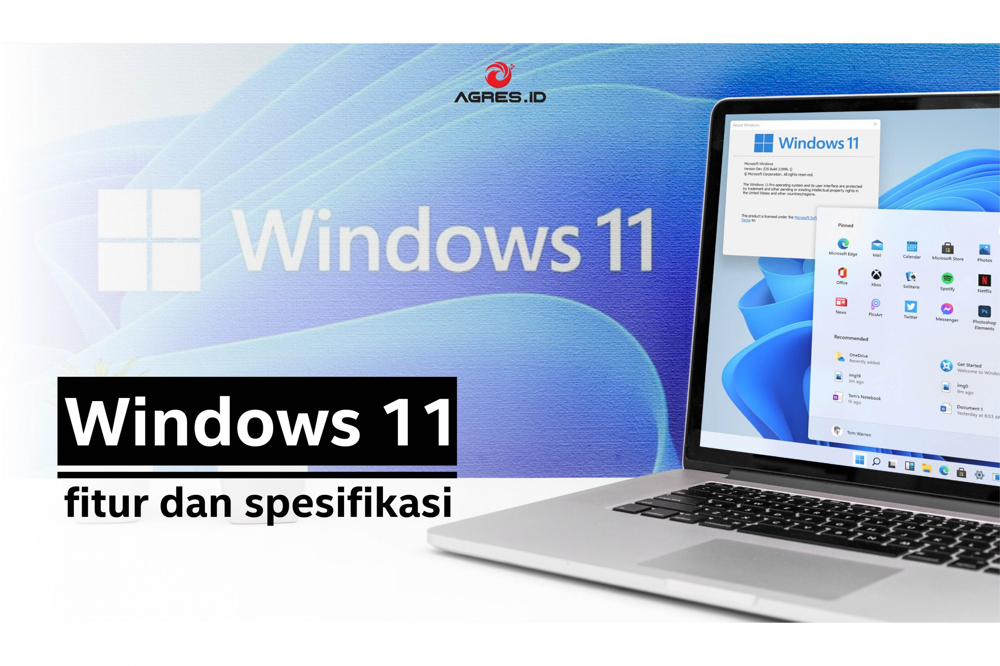

Begini Cara Mengetahui PC dan Laptop Dapat Diupgrade ke Windows 11
Posted By: Prisma Aditya Januari 11, 2022

Microsoft resmi meluncurkan Windows 11 kemarin dengan sejumlah pembaruan. Namun, tidak semua perangkat bisa mendapatkan update Windows 11 karena Windows 11 hanya akan diberikan pada perangkat yang sudah memenuhi syarat saja. Anda pun harus mengetahui cara untuk mengecek apakah PC dan laptop pengguna bisa mendapat upgrade atau pembaruan Windows 11 atau tidak. Microsoft Indonesia pun mengumumkan telah meluncurkan pembaruan Windows 11 yang bisa diunduh (download) gratis hari ini, Selasa (5/10) di Indonesia. "Kami senang membawa Windows 11 ke Indonesia," kata Wahjudi Purnama, Modern Work and Security Business Group Lead Microsoft Indonesia. Selain itu, Wahjudi juga menyebut perangkat laptop baru dengan Windows 11 juga sudah tersedia jika pengguna membeli perangkat baru yang telah dipra-instal Windows 11. Untuk mengecek apakah laptop dan PC pengguna sudah kompatibel dengan sistem operasi terbaru ini bisa dilakukan dengan sejumlah cara.
1. Gunakan aplikasi Microsoft's PC Health Check
Alat Microsoft sendiri sekarang tersedia bahkan jika Anda tidak menggunakan program Windows. Ikuti langkah-langkah berikut untuk menguji apakah komputer Anda memenuhi persyaratan sistem untuk Windows 11.
- Unduh aplikasi Microsoft's PC Health Check di ditautan ini. Buka file, setujui persyaratan layanan dan klik pasang. Pastikan kotak dicentang yang mengatakan 'Open PC Health Check', dan klik 'Finish'.
- Halaman beranda aplikasi yang muncul mengatakan "PC health at a glance. 'At the top, a box reads, "Introducing Windows 11.' Lalu, klik 'Check' sekarang. Jika PC dan laptop Anda tidak kompatibel, Anda akan mendapatkan pesan yang mengatakan, 'This PC doesn't currently meet Windows 11 system requirements'.
2. Coba aplikasi WhyNotWin11
Aplikasi terbuka bernama WhyNotWin11 adalah alternatif lain selain memasang aplikasi PC Health Check. Aplikasi WhyNotWin11 disebut memberi Anda lebih banyak informasi dan menjelaskan lebih detail tentang berbagai potensi masalah kompatibilitas.
3. Periksa daftar spesifikasi sistem di situs Microsoft
Untuk menentukan apakah PC Anda saat ini dapat menjalankan Windows 11, Anda dapat melihat daftar spesifikasi sistem ini di situs resmi Microsoft. Jika mesin Anda kompatibel, Anda dapat mengunduh pembaruan Windows 11 secara gratis saat tersedia. Jika Anda adalah bagian dari Program Windows Insider, Anda dapat mengunduh versi build 'Insider Preview'. Sebelumnya, Microsoft telah mengumumkan daftar PC atau laptop yang bisa mendapat pembaruan Windows 11 gratis pada hari ini, 5 Oktober. "Upgrade gratis ke Windows 11 akan mulai diluncurkan ke PC Windows 10 yang memenuhi syarat dan PC yang telah dimuat sebelumnya dengan Windows 11 akan mulai tersedia untuk dibeli," tulis Microsoft pada laman resmi mereka beberapa waktu lalu. Namun, tak semua perangkat yang sudah menggunakan Windows 10 bisa mendapatkan pembaruan Windows 11. Untuk mendapatkan upgrade ke Windows 11, pengguna perlu memenuhi sejumlah syarat pada perangkat komputernya, seperti minimal menggunakan prosesor berkecepatan 1 GHz dengan 2 core atau lebih, minimal RAM 4GB, dan Trusted Platform Module (TPM) versi 2.0. Sehingga, tak semua perangkat yang sudah menggunakan Windows 10 akan serta-merta mendapat pembaruan Windows 11 hari ini. Selanjutnya, perangkat-perangkat yang lebih lawas akan mendapat pembaruan bertahap. Pembaruan terhadap perangkat yang lebih berumur akan dilakukan berdasarkan spesifikasi perangkat keras, metrik keandalan, usia perangkat, dan faktor lain yang bisa mempengaruhi kinerja Windows 11